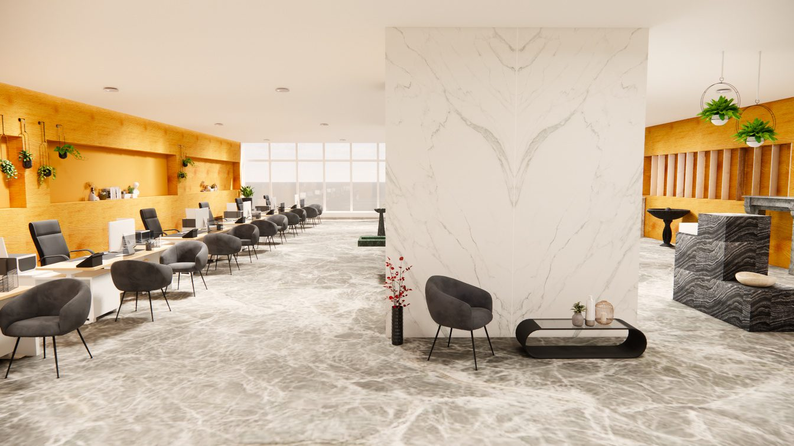
02 / 06 — Design d'intérieur commercial
Showroom —Sahara Marbre
Réaménager un showroom pour mieux faire lire la matière.
01 — Concept
Lors de mon stage, ma mission principale a été de réaménager le showroom de l'annexe « Rabat Marbre » du groupe Sahara Marbre, leader marocain du marbre. Le concept place le marbre au centre du parcours : cheminements en marbre, présentoirs et échantillons intégrés dans des niches, et une mise en scène soignée de chaque pièce.
L'objectif principal était de moderniser et d'harmoniser l'espace pour créer un environnement à la fois accueillant et professionnel.
Après l'analyse de l'existant, un nouveau concept minimaliste : plus clair, plus lisible, la pierre au centre du parcours et le bois de chêne clair en habillage mural.
Plan d’aménagement
Le showroom est réorganisé autour de la matière : le marbre devient le sujet du parcours. Cheminements en marbre, présentoirs et échantillons intégrés dans des niches, et une mise en scène soignée de chaque pièce.
Le principe est de faire du marbre le sujet du parcours : cheminements en marbre, présentoirs et échantillons intégrés dans des niches, et une mise en scène soignée de chaque pièce. L’entrée s’ouvre sur les présentoirs aux graviers ; la montée vers l’étage dessert la vitrine ; les îlots centraux concentrent les mises en scène.
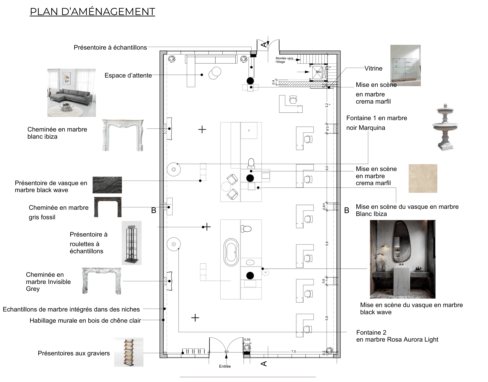
Plan d'aménagementParoi ouest & paroi nord
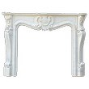
Cheminée en marbre blanc IbizaContre la façade nord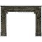
Cheminée en marbre gris fossilNiche médiane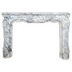
Cheminée en marbre Invisible GreyParoi sud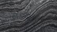
Présentoire de vasque en marbre black waveNiche murale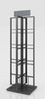
Présentoire à roulettes à échantillonsParoi ouest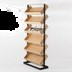
Présentoires aux graviersÀ l’entrée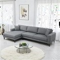
Espace d’attenteAngle nord-ouest
Habillages &samples
- Échantillons de marbre intégrés dans des niches toute la longueur de la paroi ouest
- Habillage murale en bois de chêne clair bandeau continu en partie basse
Îlots & mises en scène
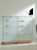
Vitrineprès de la montée vers l’étage- Mise en scène en marbre crema marfilîlot central
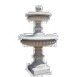
Fontaine 1 en marbre noir Marquinaaxe de circulation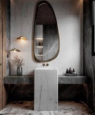
Mise en scène du vasque en marbre Blanc Ibizaîlot sud
Matières complémentaires
- Mise en scène en marbre crema marfil vitrine et îlot sud
- Mise en scène du vasque en marbre black wave variante du vasque
- Fontaine 2 en marbre Rosa Aurora Light point d’eau sud-est
Before & After
Après l’analyse de l’existant, un nouveau concept minimaliste : plus clair, plus lisible, la pierre au centre et le bois clair en habillage mural.
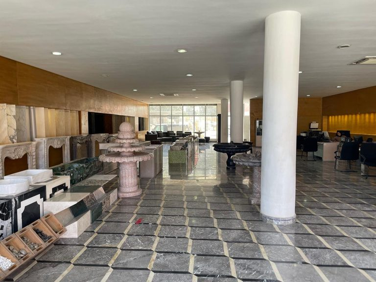
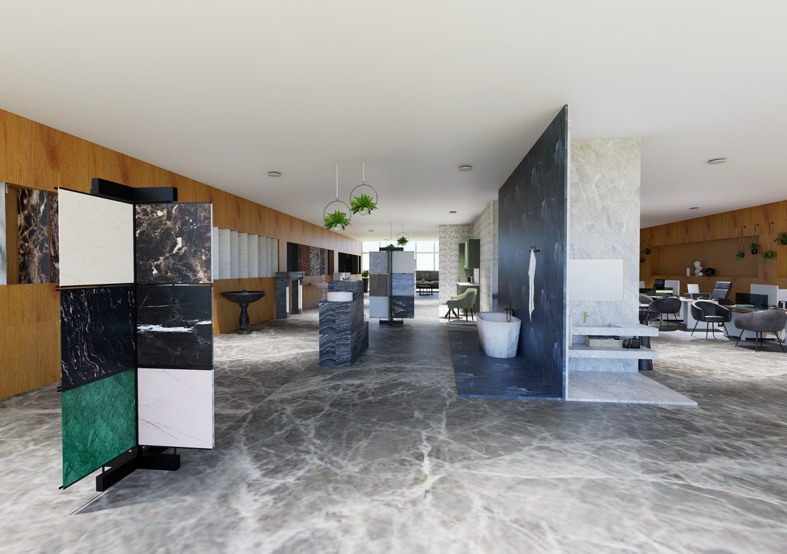
Perspectives
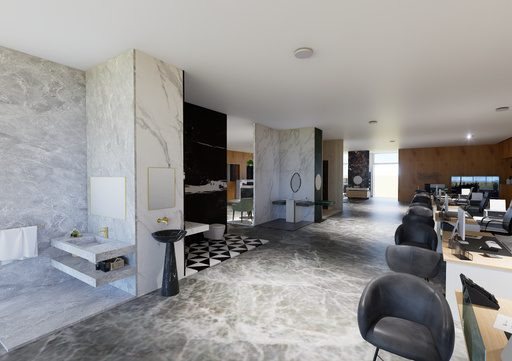
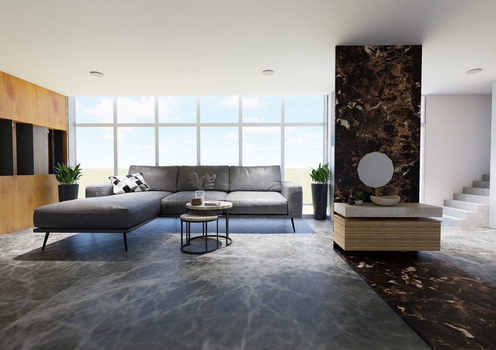
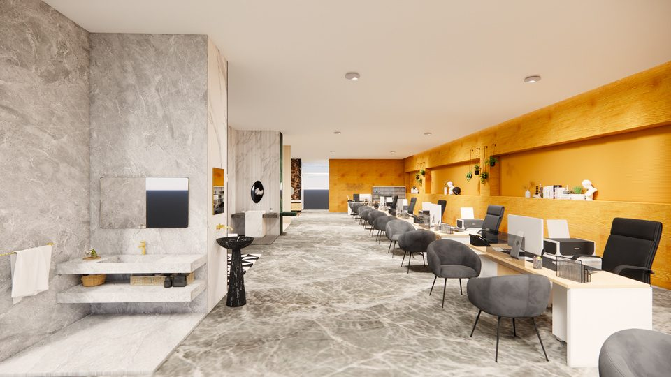
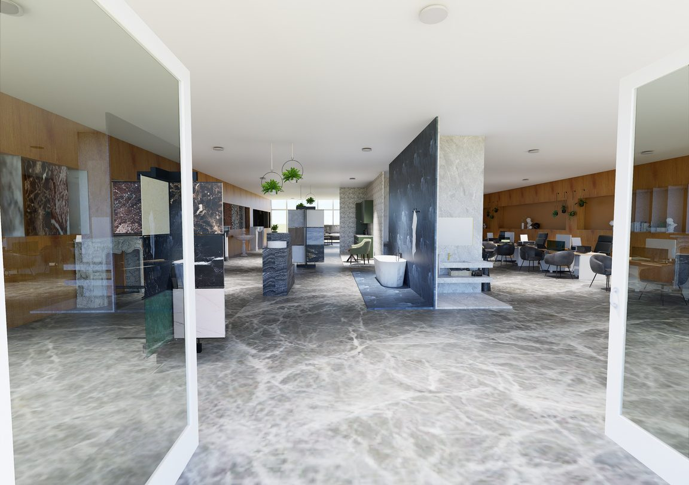
Catalogue — pièces en marbre
Au-delà des vues d’ensemble, le showroom présente chaque pièce en marbre comme un objet à part entière — cheminée droite ou courbe, vasque, fontaine — soit isolée, soit mise en scène dans un décor complet. Les échantillons sont présentés sur un présentoir à roulettes et intégrés dans des niches murales.
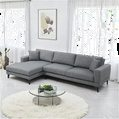
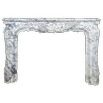
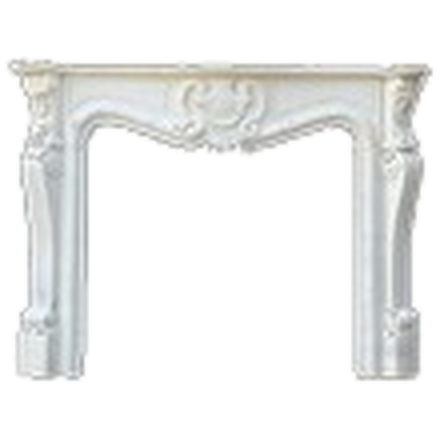
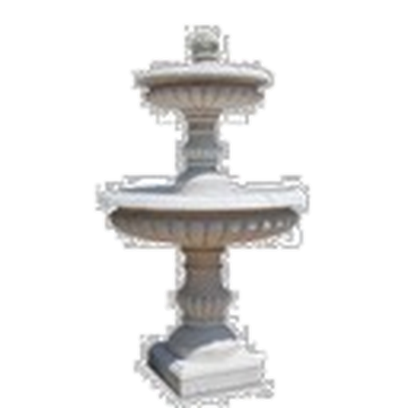
- Cheminée droite
- Marbre Blanc Ibiza
- Cheminée courbe
- Marbre gris fossil
- Cheminée murale
- Marbre Invisible Grey
- Vasque
- Marbre black wave
- Fontaine 1
- Marbre noir Marquina
- Fontaine 2
- Marbre Rosa Aurora Light
- Mise en scène îlot
- Marbre crema marfil
- Présentoir à roulettes
- Échantillons de marbre sur chariot
- Présentoirs aux graviers
- Graviers de marbre en présentoir
- Habillage mural
- Bois de chêne clair
Nomenclature des pièces

04 — Contact